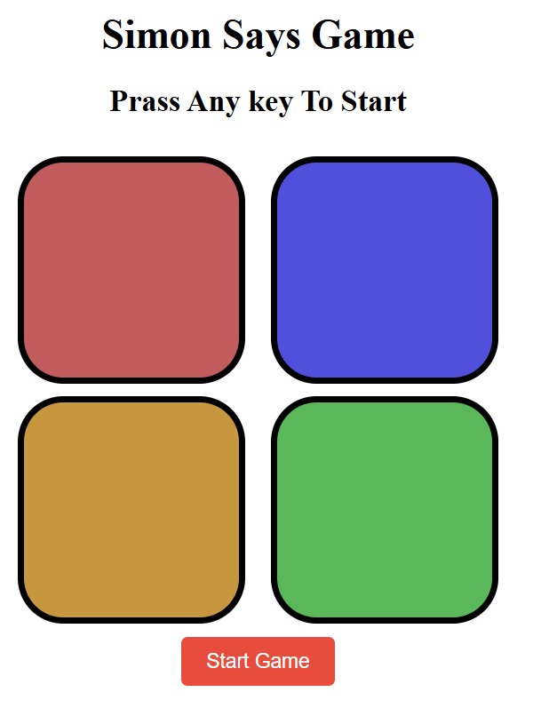

Simon Game Clone
Description:
This project is a clone of the classic Simon game, designed to test and challenge your memory skills. The game presents a sequence of flashing colors and sounds that you must repeat. With each successful round, the sequence increases by one, making it progressively more challenging.
Project Screenshots:

How to Play:
- Start the Game: Click the "Start" button to begin.
- Watch the Sequence: Observe the game as it displays a series of colored button flashes accompanied by sounds.
- Repeat the Sequence: Click on the colored buttons in the exact order as they were shown.
- Advance Rounds: If you correctly replicate the sequence, the game will add another color to the sequence.
- Game Over: If you make a mistake, the game ends. Your score is determined by the number of rounds you complete.
Technologies Used:
- HTML: Provides the basic structure of the game interface.
- CSS: Used to style the game, including layouts, colors, and responsive design.
- JavaScript: Implements the game logic, including sequence generation, user input handling, and animations.
Additional Information:
- The game features a responsive design to ensure smooth play on both desktop and mobile devices.
- The project is open for further customization and improvements.
Enjoy the game and challenge your memory with this engaging Simon Game Clone!